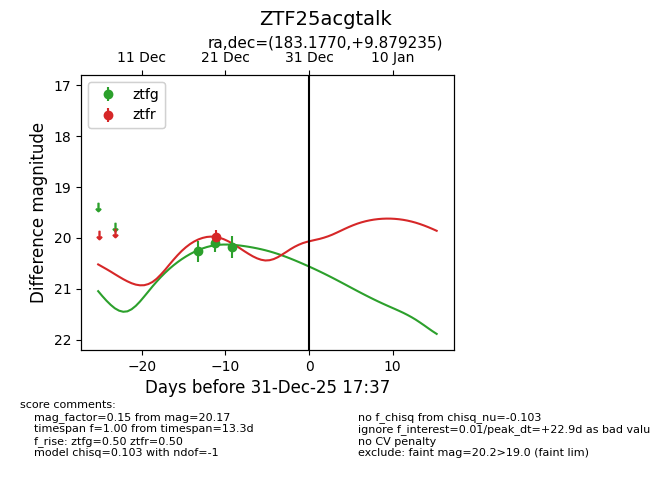
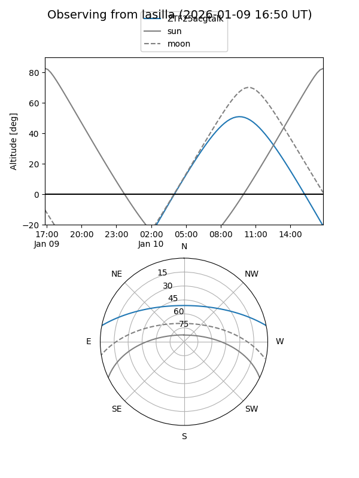
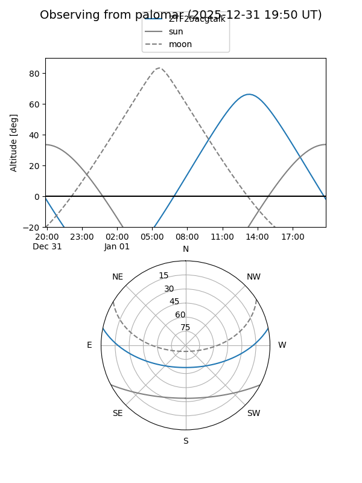
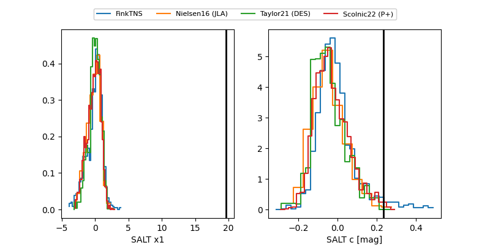

ZTF25acgtalk
Target ZTF25acgtalk at 2025-12-31 18:00
Aliases and brokers:
FINK: link
Lasair: link
ALeRCE: link
alt names
ZTF25acgtalk (ztf,fink_ztf)
Coordinates:
equatorial (ra, dec) = 183.1770,+9.87924
equatorial (HMS+DMS) = 12:12:42.48,+09:52:45.25
galactic (l, b) = (273.2008,+70.48174)
Flags:
Photometry:
last ztfg=20.17, ztfr=19.98
3 ztfg, 1 ztfr detections
Lightcurve

Visibility


Additional plots
